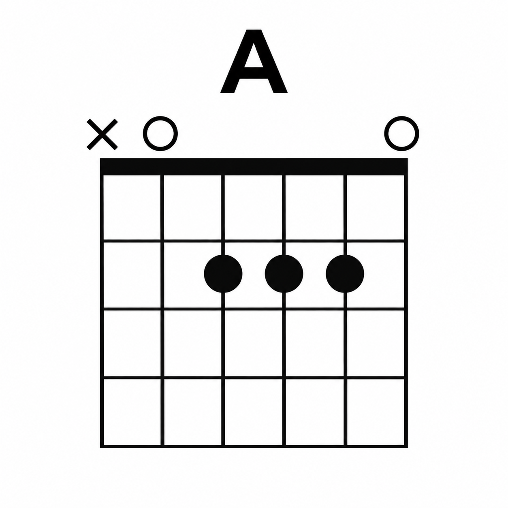

🎸 Chord Coach
Listen • Learn • Practice
MIC OFF
Detected chord
Chord
Fret
Detection level
Level 3 • 80%+
Level 1
60%+
Level 2
70%+
Level 3
80%+
—
Tap play to listen
Match confidence
0%
Volume: 0.0000 | Gap: 0.0%
Recent chords
No chords detected yet
Practice mode
Target chord
Practice Mode Off
Hide Chord Guide
Chord Guide
O
= Play open •
X
= Do not play / mute
Select chord
A
Am
A7
B
Bm
B7
C
Cm
C7
D
Dm
D7
E
Em
E7
F
Fm
F7
G
Gm
G7

Chord image not found.
Showing
A
⚙ Detection Settings
×
Microphone
Default microphone
Your browser will ask for microphone permission the first time.
Chord detection threshold
80%
Mic sensitivity
70%